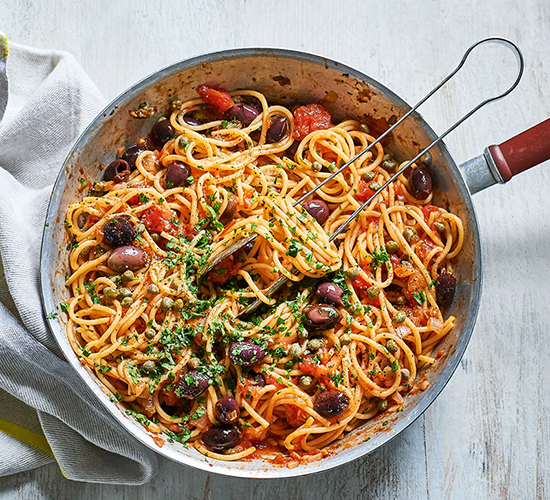

Pasta Recipe

Delicious pasta dishes from classic spaghetti Bolognese to lasagne and linguine.
Find the perfect pasta recipe for midweek meals as well as easy pasta dishes you can rustle up
using your storecupboard.
Ingredients
- 3 tbsp olive oil
- 1 Onion, finely chopped
- 2 large garlic cloves, crushed
- Half a tsp chilli flakes
- 400g can chopped tomatoes
- 5 anchovy fillets, finely chopped
- 120g pitted black olives
- 2 tbsp capers, drained
- 300g dried spaghetti
- half a small bunch of parsley, finely chopped
Method
Step 1
- Heat the oil in a non-stick pan over a medium-low heat. Add the onion along with a generous pinch
of salt and fry for 10 mins, or until soft. Add the garlic and chilli, if using, and cook for a further minute.
Step 2
- Stir the tomatoes, anchovies, olives and capers into the onion, bring to a gentle simmer and cook,
uncovered, for 15 mins. Season to taste.
Step 3
- Meanwhile, bring a large pan of salted water to the boil. Cook the spaghetti following pack instructions,
then drain and toss with the sauce and parsley.